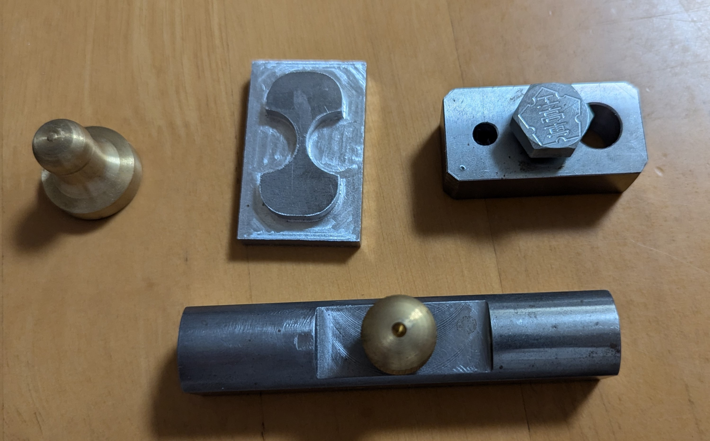

エネルギー機械コースの「学び」
エネルギー機械コースの「学び」について紹介していきます。
エネルギー機械コースではどのようなことを学ぶのか少しでもイメージしやすくなってください。
材料
予算や気分にあわせて具材を追加したり、量を調整してください。
- 市販のカレールー（中辛）... 1/2箱
- 鶏肉 ... 400g
- 玉ねぎ ... 3個（中サイズ）
- にんにく ... 1片
- 水 ... 700ml
- サラダ油 ... 大さじ1
-
ガラムマサラ
... 適量
実験・実習
- 2年次
機械工作実習１
- 3年次
機械工作実習２
- 4年次
エネルギー機械実験１
- 5年次
エネルギー機械実験２
実験・実習では次のようなものなどさまざまなものを作成しながら学んでいく
以下のものは3年次に作成したものである。

本科紹介動画
エネルギー機械コース紹介動画
その他コースの紹介ホームページ
本科・専攻科紹介